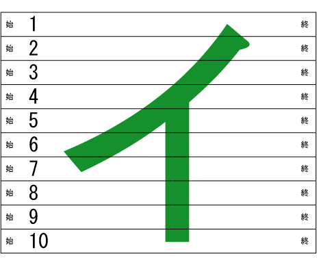
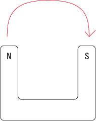
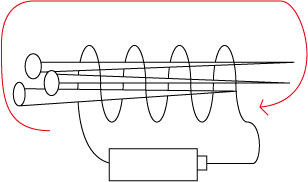
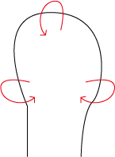
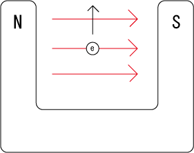
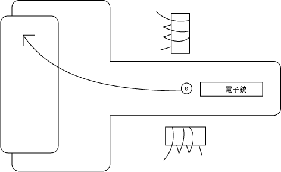
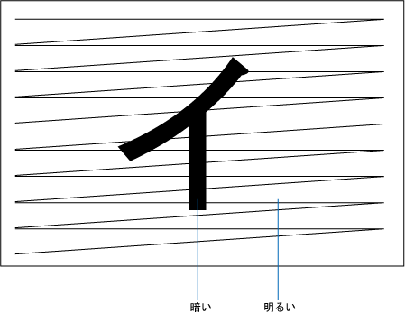

テレビの世界観です。機械いじりが子供のごろから好きだった父親の話を参考にしています。
モニターも参照のこと。
テレビは、離れたところにある映像を別の場所に送るために、走査という考え方を行う。
これは、画像をテープのように細切れにして、それぞれに番号と「始点・終点」のマークをつけ、画像を一つの電気信号に変換する。

ここでは、イという文字を10つの細切れの線に変え、その上で、それを一本の連続した電気信号に変換し、電波に乗せて送り、それをブラウン管に表示させる。（最近は、ブラウン管ではなく、液晶ディスプレイが使われることが多い。）
ただ、本当は10本ではなく、もっとたくさんの細かい線を一本の連続した電気信号に変える。それを電波に乗せて、ブラウン管で一行ずつ表示し、遠くの場所でも映像が見られるようになる。
この方式を発明・実験したのは日本人の高柳健次郎である。彼はブラウン管による電送・受像を世界で初めて成功し、カタカナの「イ」の文字を走査線40本で送受信した。
まず、導線（電線）に電流を流すと、電子は電流として流れる。この時、磁界が右回りに発生する。
これは、以下の永久磁石の磁界と同じである。

鉄でできた釘にコイルを巻くと、永久磁石と同じ電磁石を作れる。これは、電流を流した時だけ磁界が発生する。

これはなぜかというと、以下のように、導線の周りの電磁力が、全て内向きに発生するからである。

そして、磁界中にある電子は、力を受けて動く。これがミソである。

ブラウン管は、ブラウン博士が発明した、画像を表示する装置である。以下のような構造になっている。

電子銃から飛び出した電子は、（何も電磁力の無い場合は）まっすぐ中央に飛んでくるが、それを縦と横の電磁石で向きを変えることによって、さまざまな方向に電子が飛ぶ。
ディスプレイの表面に「蛍光物質」が塗られており、電子が当たると光るようになっている。
また、ブラウン管の中は真空になっている。
ブラウン管に送られる電子銃の方向は、以下のように、右から左へと進んで繰り返しゼロに戻る。
これによって、以下のように画像を表示できる。

そして、電子銃で飛ばす電子の強弱をコントロールすることで、映像を表示する。明るい部分は明るく、暗い部分は暗くするために、強弱を調節する。
右から左に繰り返し表示し、明るさと暗さの調節をしながら映像を表示する。ここで「走査」が行なわれている。
偏光板とは、特定方向に入射してくる光だけを通し、それ以外の方向の光を遮断する特殊な板のこと。
液晶は、この偏光板を液体で作り出し、電圧によって整列させることで、光をシャットする。
液晶ディスプレイなどで、この技術が用いられている。
僕の知識があいまいなのか、僕は液晶は液体に何らかの物質を混ぜて、それに電圧を通してその物質を整列させ、特定の方向に対する偏光パネルを作って、光をブラインドのように遮る、と理解していた。だが、父親は、液晶と言う物質があるのであって、液体に混ぜて作るのではない、と言っていた。
二枚の偏光フィルターを使って、液晶分子を電圧によって整列させる（0度あるいは90度に並び方を変える）ことで、そこを通る光を遮断したり通したりすることが可能になる。
詳しくは以下のようなページを参照のこと。
以下のページが参考になります。
以下のページが参考になります。
新しいとても綺麗で高画質なテレビとして、4K・8Kが開発されている。最近では4K・8K対応の衛星放送も始まった。
まるで「実際の三次元空間を見ているよう」と表現され、まさに「別世界」である。新しいネットワークの「5G」とともに、新たな時代の放送・通信を担っていく。今、始まっている。
カメラを参照のこと。
モニターも参照のこと。